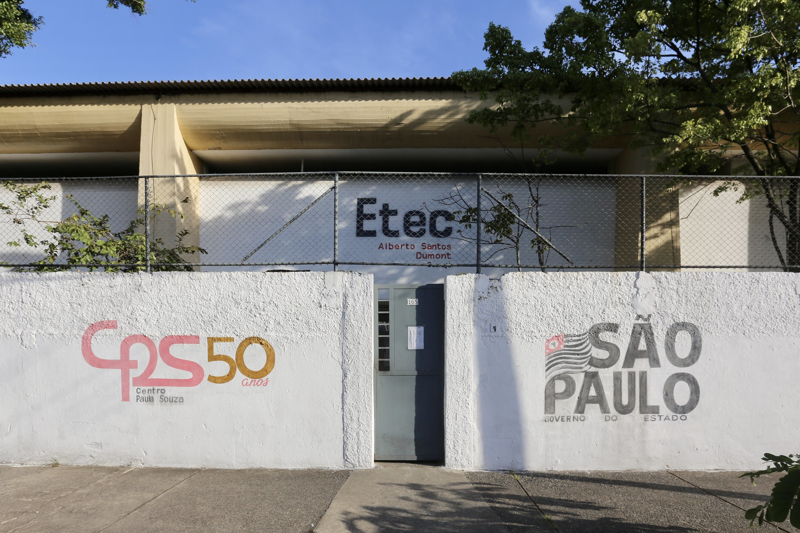

ETEC ALBERTO SANTOS DUMONT

ESCOLA AZUL
A ideia de Escola Azul originou-se em Portugal em 2017 com o propósito de integrar ao currículo da escola a cultura oceânica, e por intermédio desse, incentivar os alunos a terem uma maior consciência sobre o oceano e como ele interfere diretamente no nosso cotidiano.
Além disso, “All-Atlantic Ocean Research and Innovation Alliance” é o projeto que iniciaria o conceito de Escola Azul. Formado na União Europeia, o intuito era disseminar essa ideia pelos países do atlântico, ou seja, países da América do Sul, América Latina, América do Norte e a costa leste da África. Hoje, são 16 nações integradas nesse projeto sendo os principais o Brasil, Portugal e a Argentina.
VALOR DO OCEANO
Vale ressaltar, a princípio, que o valor do oceano na vida na terra é imensurável. Além de possuir uma vasta biodiversidade e uma fauna marinha incrível que proporcionou uma fonte de alimentação para muitos povos há várias gerações, ele é um dos responsáveis pela captação de grande parte do carbono presente na atmosfera, o que faz dele um agente importante para o equilíbrio climático.
Ademais, o oceano possui muitas propriedades benéficas para a saúde humana. Hipócrates (460 – 377 aC), “pai da medicina”, aconselhava o uso da água do mar e o clima litorâneo com finalidade terapêutica, isso porque a água do mar fornece ao organismo elementos minerais como o iodo, enxofre, cálcio e magnésio, e desse modo, pode ser um grande auxilio para pessoas que padecem com problemas respiratórios.